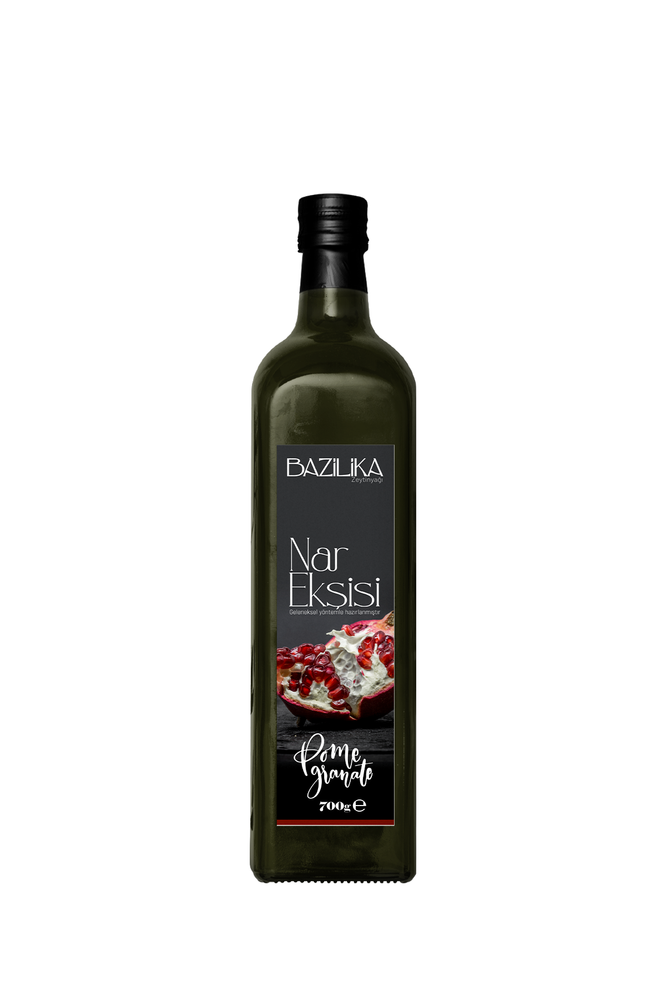
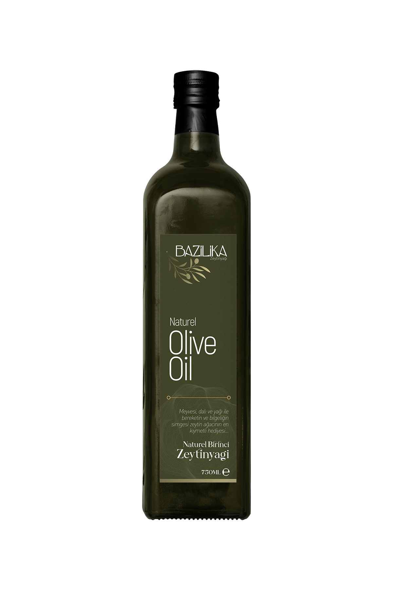
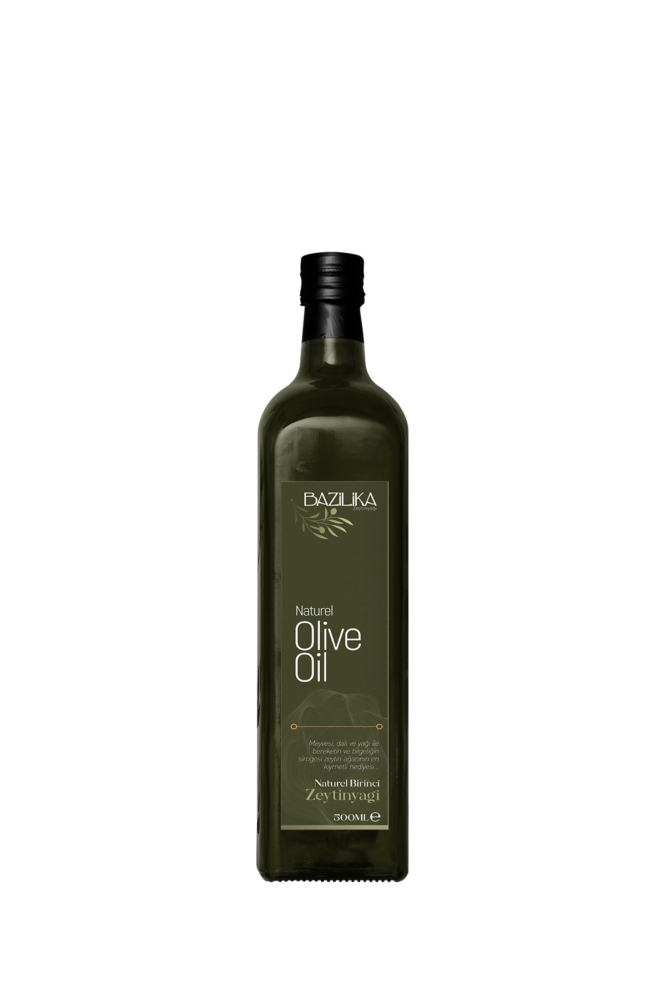
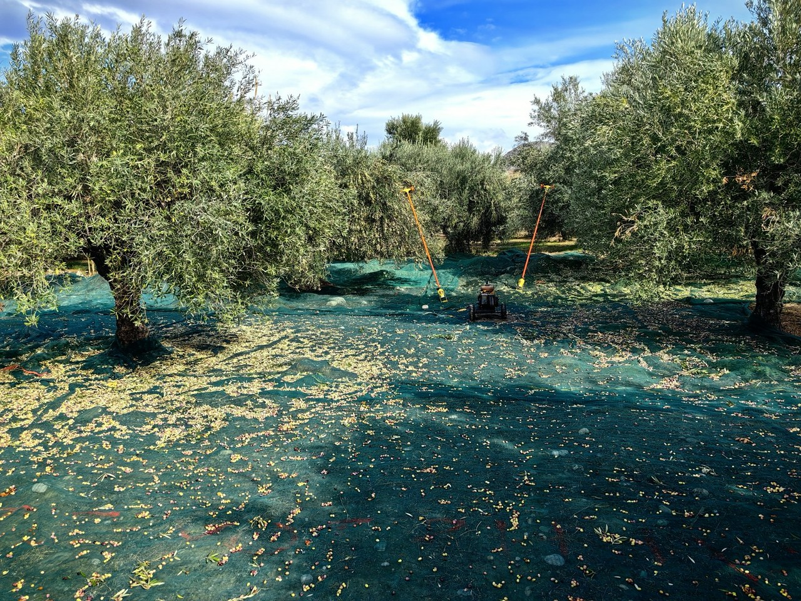

Bazilika, Altınözü, Hatay çıkışlı bir zeytinyağını yer duygusu güçlü çizgisinde sunar. Sofraya ulaşan her şişede temiz, karakterli ve hatırlanır bir tat bırakmayı hedefler.



Bazilika, Altınözü, Hatay tarafının yer duygusunu sofraya taşır. Altınözü, Hatay çıkışlı bu yağı yer duygusu güçlü çizgisinde hazırlar; şişe sofraya ulaştığında yalnızca lezzet değil güven de taşır.

Bazilika bu yağı yalnızca satılacak bir ürün olarak görmez. Şişeyi açan kişinin daha ilk anda toprağı, emeği ve sofraya verilen önemi hissetmesi amaçlanır.
Bazilika, Altınözü, Hatay tarafının karakterini olduğu gibi taşımaya çalışır. Şişede görülen lezzetin kökü, bu coğrafyanın ikliminde, toprağında ve zeytin ağacının yıl boyunca biriktirdiği dengede yatar.
Bazilika tarafında lezzet anlatılırken önce damakta bıraktığı iz öne çıkar. Bu yağda sade ama hafızada kalan dengeli bir karakter öne çıkar. İyi zeytinyağı anlayışında, şişe açıldığında temiz koku vermesi ve sofrada nerede duracağını hemen belli etmesi beklenir. Bu nedenle kahvaltıda ekmeğe gezdirdiğinizde, salatada son dokunuşu yaptığınızda ya da zeytinyağlı bir yemekte temel lezzeti kurduğunuzda farklı biçimde karşılık verir.
Öne çıkan taraf yalnızca lezzet iddiası değildir; neyin neden yapıldığının açık tutulması ve şişede görülen dilin ürünün içinde de korunmasıdır.
Bazilika, Altınözü, Hatay tarafının karakterini olduğu gibi taşımaya çalışır. Şişede görülen lezzetin kökü, bu coğrafyanın ikliminde, toprağında ve zeytin ağacının yıl boyunca biriktirdiği dengede yatar.
Bazilika tarafında lezzet anlatılırken önce damakta bıraktığı iz öne çıkar. Bu yağda sade ama hafızada kalan dengeli bir karakter öne çıkar. İyi zeytinyağı anlayışında, şişe açıldığında temiz koku vermesi ve sofrada nerede duracağını hemen belli etmesi beklenir. Bu nedenle kahvaltıda ekmeğe gezdirdiğinizde, salatada son dokunuşu yaptığınızda ya da zeytinyağlı bir yemekte temel lezzeti kurduğunuzda farklı biçimde karşılık verir.
Öne çıkan taraf yalnızca lezzet iddiası değildir; neyin neden yapıldığının açık tutulması ve şişede görülen dilin ürünün içinde de korunmasıdır.
Bu yağı ilk kez deneyecekseniz işe hangi sofrada kullanacağınızı düşünerek başlamak gerekir. Teneke seçenekleri bu yüzden önemli. İlk denemede küçük hacim güven verir; beğendiğiniz çizgiyi bulduğunuzda daha büyük ambalajlar evdeki düzenli kullanım için çok daha doğru olur. Yoğun aromayı kahvaltıda ve çiğ dokunuşlarda arıyorsanız daha karakterli şişelere, gün boyu mutfakta rahat kullanmak istiyorsanız daha yumuşak akış veren serilere yönelmeniz daha doğru olur.
Bazilika tarafında bu işin özü, sofraya güvenle koyulabilecek bir şişe sunmaktır. Bazilika alındığında yalnızca bir yağ değil; emeği belli olan, nereden geldiği hissedilen ve hangi sofrada parlayacağını bilen bir seçim gelir. Şişe açıldığında beklenti ne olursa olsun amaç aynıdır: kokusuyla, akışıyla ve damakta kalan iziyle bu yağı tekrar hatırlatmak.
İyi zeytinyağı anlayışında yalnızca rengi güzel görünen bir yağ aranmaz; kokusu açıldığında canlı olmalı, damakta temiz akmalı ve sofradaki diğer tatların üzerine çıkmadan kendini belli etmelidir.
Şişeyi açtığınızda önce gelen koku, sonra dilde bıraktığı akış ve en son boğazdaki kısa iz iyi bir şişede en çok dikkat edilen ayrıntılardır. Bu üçü bir araya geldiğinde yağ kendini gerçekten anlatır.
İster kahvaltı sofrasında ekmeğe gezdirin ister salatada son dokunuş olarak kullanın, iyi bir şişe her kullanımda aynı güveni vermelidir. Güven duygusunu kalıcı kılan şey tam olarak bu tutarlılıktır.
Sofrada fark edilen iyi yağ, yalnızca parlak bir etiketle değil, ikinci lokmada da aynı temizliği sürdürebilmesiyle anlaşılır. Aranan etki tam olarak budur.
İyi zeytinyağı anlayışında yalnızca rengi güzel görünen bir yağ aranmaz; kokusu açıldığında canlı olmalı, damakta temiz akmalı ve sofradaki diğer tatların üzerine çıkmadan kendini belli etmelidir.